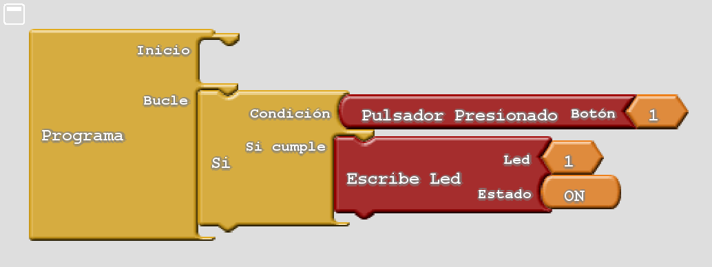
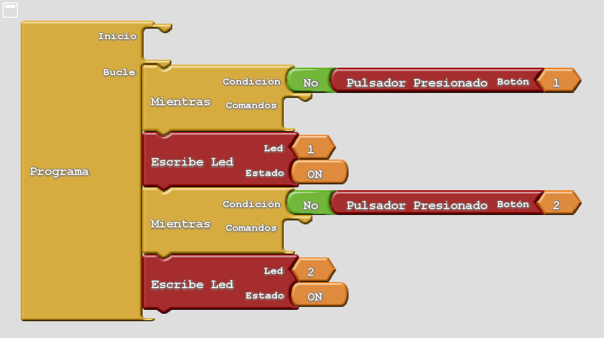
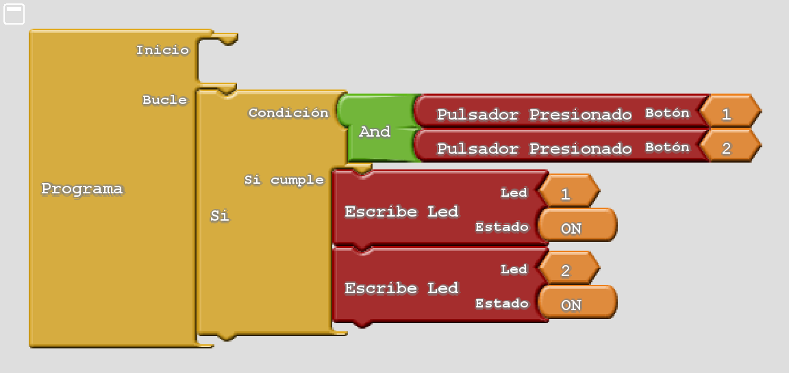
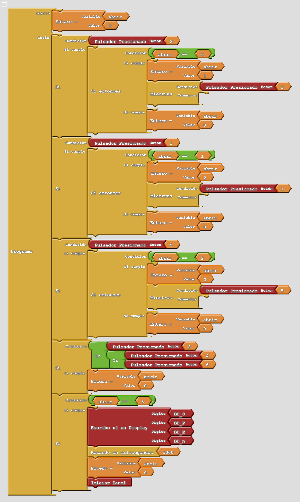

4. Ejercicios con pulsadores¶
Programar los bloques necesarios para resolver los siguientes problemas.
Encendido con pulsador. Copiar el siguiente programa que enciende el led D1 si se presiona el pulsador 1.
Completar el ejercicio anterior para que apague el led D1 si se presiona el pulsador 2.
Secuencia de encendido. Copiar el siguiente programa que enciende dos led con pulsadores. El led D1 se encenderá al presionar el pulsador 1. A continuación el led D2 se encenderá al presionar el pulsador 2. El led D2 no se puede encender antes de que se encienda el led D1.
Completar el programa anterior para que los pulsadores enciendan todos los led hasta el D6.
Desplazamiento de luces. Copiar el programa, que funciona de la siguiente manera:
Al comenzar el programa, se enciende el led D1.
Al presionar el pulsador 1, se apagará el led D1 y se encenderá el led D2.
A continuación, cuando se presione el pulsador 2, se apagará el led D2 y se encenderá el led D3.

Completar el programa anterior para que continúe encendiendo los led hacia la derecha hasta llegar al led D5.
Al final, al presionar el pulsador 5, el led D5 se apagará y se encenderá de nuevo el led D1.
Desplazamiento inverso. Modificar el programa anterior para que los ledes se enciendan desde el D5 hasta el D1.
Cuando llegue el turno de apagar el led D1, se encenderá de nuevo el led D5.
Encendido bimanual Copiar el siguiente programa que enciende los led D1 y D2 al presionar a la vez los pulsadores 1 y 2.
Este programa puede servir para accionar una prensa peligrosa cuando se presionen a la vez, con las dos manos, dos pulsadores separados entre sí. Esto protege las manos del peligro de la prensa.
Modificar el programa anterior para que se enciendan los tres ledes D1, D2 y D3 al presionar a la vez los tres pulsadores 1, 2 y 3.
Los tres led se deben apagar al presionar el pulsador 4.
Cerradura electrónica. Copiar el siguiente programa que simula una cerradura electrónica. Al presionar en orden la secuencia de pulsadores 3, 1 y 5, una cerradura electrónica se abrirá. La apertura se indica con la palabra OPEN en el display.
Modifica el ejercicio anterior para que la cerradura se abra al presionar la secuencia de pulsadores 2, 6, 1 y 4.
{kind=link}
{kind=link}
{kind=link}
{kind=link}